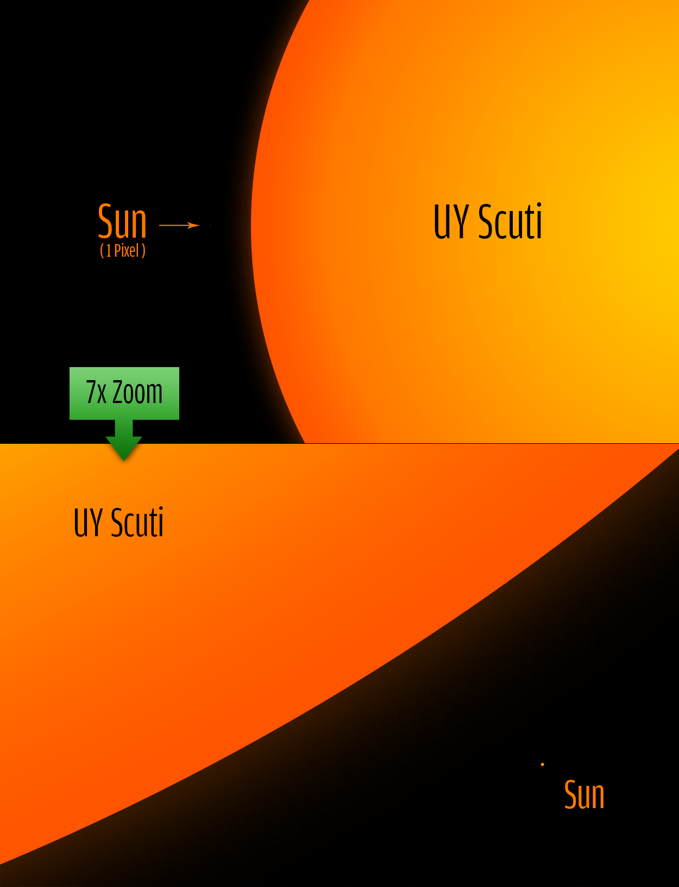

UY Scuti
- UY Scuti was first cataloged in 1860
By German astronomers at the Bonn Observatory, during the first sky survey of stars for the Bonner Durchmusterung Stellar Catalogue.
- It is one of the largest known stars by radius
And is also a variable star with a maximum brightness of magnitude 8.29 and a minimum of magnitude 10.56.
- The Star would engulf most of Jupiter's orbit
Taking in the Sun, the first five planets of our solar system, and the asteroid belt.
- Based on current models of stellar evolution UY Scuti has begun to fuse helium
And continues to fuse hydrogen in a shell around the core.
- A hypothetical object travelling at the speed of light would take about seven hours to travel around UY Scuti at maximum
Whereas it would take 14.5 seconds to circle the Sun.
| Diameter |
2.3765 billion km |
| Luminosity |
340,000 L☉ |
| Distance From Earth |
5,219 light years |
| Constellation |
Scutum |
| Temperature |
3,092 °C (5598 °F) |
| Mass |
7–10 M ☉ |
| Age |
Unknown |

{kind=link}